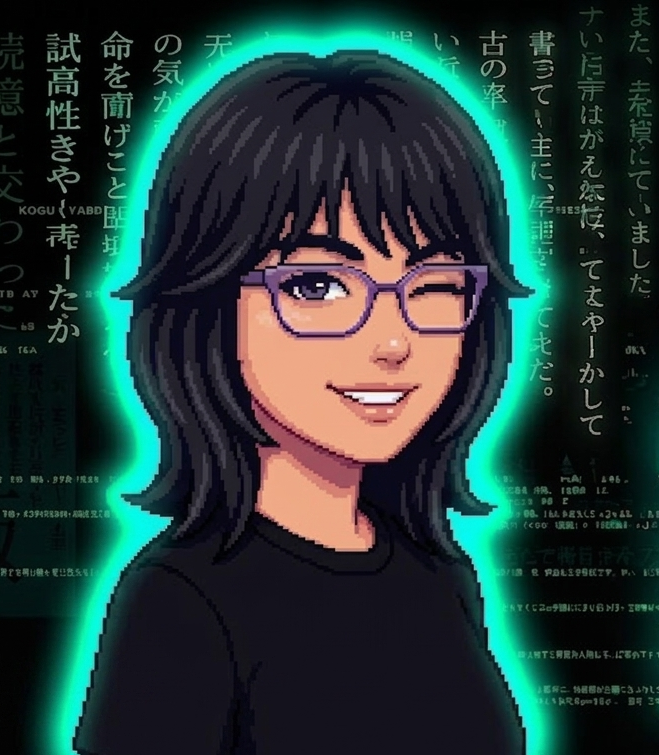

Naysha Nadinne Puquio Gonzalo
Estudiante de Ingeniería de Inteligencia Artificial · UNMSM
Presentación

Hola, soy estudiante de primer ciclo de la carrera de Ingeniería de Inteligencia Artificial en la Universidad Nacional Mayor de San Marcos. Me apasiona la tecnología y el aprendizaje continuo; en esta página comparto mi información académica y personal.
Datos personales
| Nombres: | Naysha Nadinne |
| Apellidos: | Puquio Gonzalo |
| Fecha de nacimiento: | 15 de enero de 2009 |
| Universidad: | Universidad Nacional Mayor de San Marcos |
| Carrera (2026 I): | Inteligencia Artificial |
| Idiomas: | Español (nativo) · Inglés (intermedio B1) |
Profesores · periodo 2026 I
- Introducción a la ciencia de la computación: Ernesto Cuadros Vargas
- Cálculo I: Edwin Marcos Maraví Percca
- Álgebra y Geometría analítica: Hellen Gloria Terreros Navarro
- Métodos de estudio universitario: Miryam Cosme Félix
- Medio ambiente y desarrollo sostenible: Petronila Mérida Fanola Merino
- Redacción y técnicas de comunicación efectiva I: Ana Eylin Coronel Tello
- Desarrollo personal y liderazgo: Luz Basualdo Porras
Tecnologías que estoy aprendiendo
Mis perfiles
Nvynn166 (GitHub)
Naysha Nadinne Puquio Gonzalo (LinkedIn)
Red académica
Mis hobbies
Dibujar, Pintar, Tocar piano y guitarra.
⭐ EXTRA · Mis redes sociales
UNMSM · Facultad de Ingeniería de Sistemas e Informática